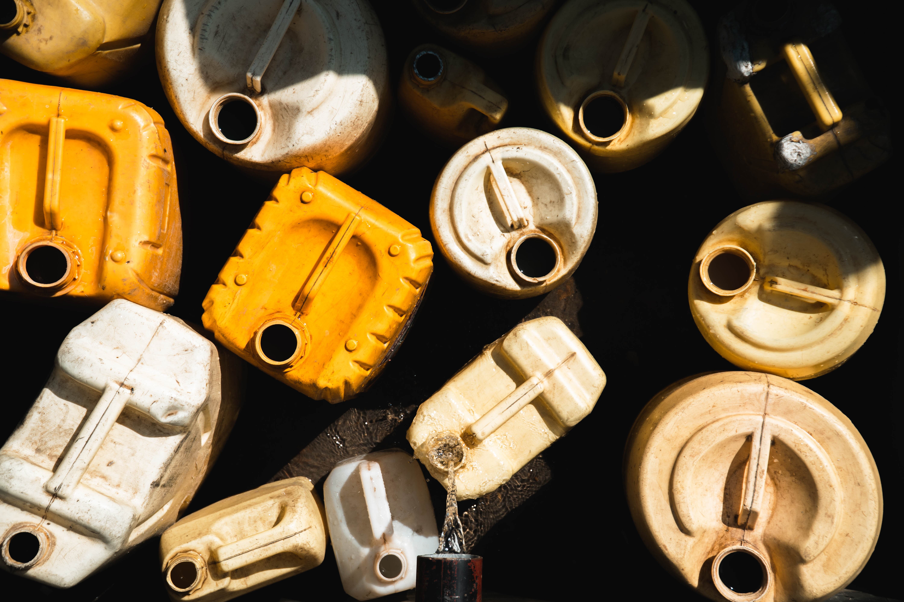

Tips To Reduce Recycling Contamination
Properly sorting waste into the correct bins is crucial to ensure effective recycling. Contamination, or incorrect disposal, can ruin an entire load of recyclable material.
Contamination in recycling occurs when non-recyclable items are placed in the recycling bin. 'Wishcycling', or throwing items in the recycling bin without checking if they're recyclable, can contribute to contamination. Some items are not collected by your local council, like plastic wrapping, while others may be contaminated with non-recyclable materials, such as grease-soaked pizza boxes or food residue on cans. It could also be something that can’t be recycled at all.

Why is contamination bad?
It is crucial to correctly sort waste into the appropriate bin. Incorrect items can contaminate recycling and prevent entire loads from being recycled. Properly sorting recycling saves time, money, and ensures effective recycling. Otherwise, taxpayers bear the burden of increased costs for collecting and sorting contaminated recycling. Contamination can decrease the value of recyclable materials and require disposal instead of recycling. Additionally, certain types of contamination can endanger recycling and waste workers. In short, it can be confusing to avoid contamination while we wait for a consistent recycling system. Here are some tips to help with recycling.
If an item is recyclable but has been contaminated with another substance, what should be done?
When a recyclable item is contaminated with non-recyclable material, it becomes unrecyclable. Small amounts of contamination are okay, but too much renders the item unrecyclable and it must be disposed of. A common example of this is food packaging that still contains food - such as jars with bits of jam, plastic bottles with liquids, or takeaway trays and boxes with food residue or grease. Another example is cardboard with attached sticky tape. The key to recycling is moderation. You don’t need to remove every label or bit of sticky tape, and you don’t need to remove the plastic windows from envelopes. Simply make sure your recyclables are empty and give them a quick rinse. When recycling: • Rinse glass jars and plastic bottles with washing up water. • Tear greasy sections off pizza boxes. • Check if council collects lids. • Remove polystyrene and bubble wrap from cardboard boxes.